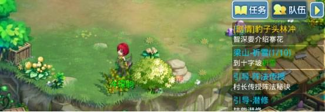
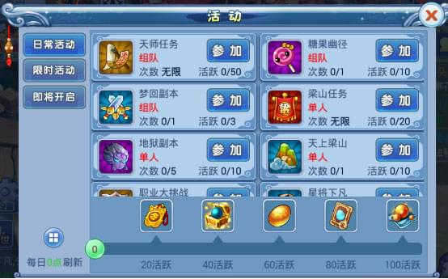
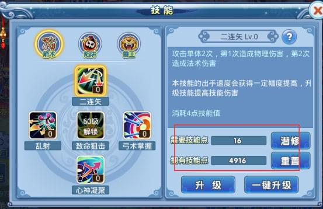
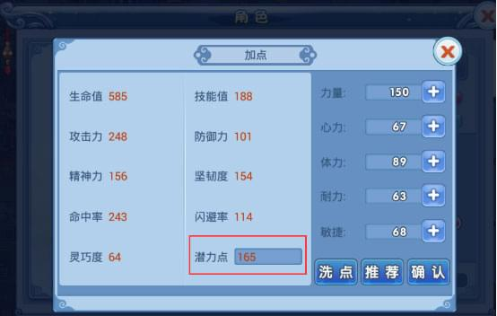
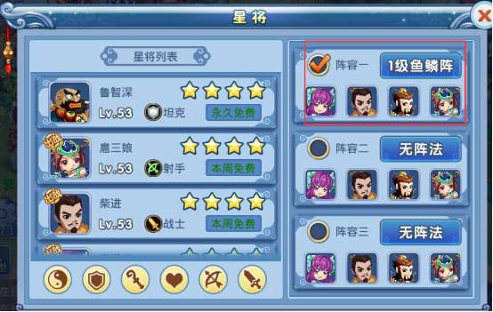
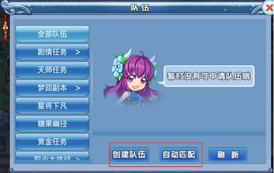
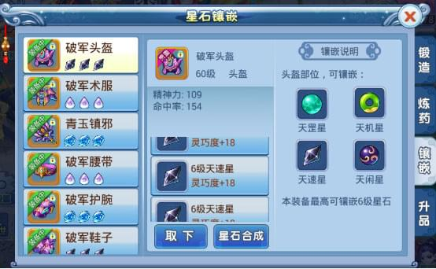
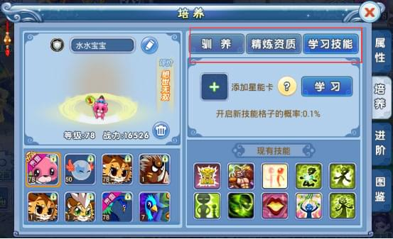
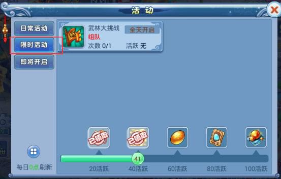
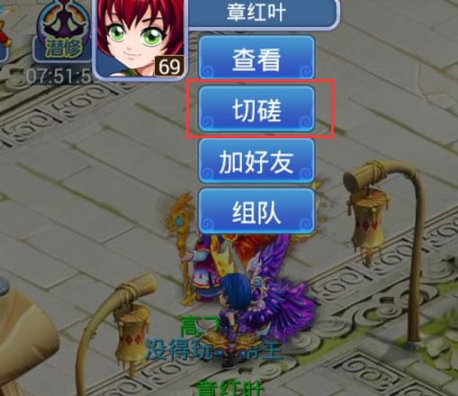

1我要怎么入门？
2我要怎么选择适合我的职业？
职业介绍
精通治疗术，还能解除队友的封印，提升队友攻防，为队友无私奉献，是队伍中不可缺少的一员。适合有无私奉献精神的玩家。
技能介绍
- 驱散
- 增益
- 治疗

推荐加点
普通保守型：2体2心1耐，比较中庸，能保证血和蓝还有抗打击。
极限肉盾型：2体2耐1敏，在队伍中是抗血抗怪的位置，这样也减轻了其他队员的负担。
技能介绍
拥有极为恐怖的瞬间杀伤力，能进行单体和群体攻击。防御较弱，但拥有提高防御力和免疫伤害的技能。适合追求华丽法术、群攻的玩家。
职业介绍
- 毁灭
- 生存
- 元素

推荐加点
毁天灭地型：5心，极限输出，秒天秒天秒空气，土豪玩家可以考虑。
普通保守型：4心1敏、4心1体，大众加点，保证输出的同时，增加抗打能力。
职业介绍
高速度，高封印，拥有强大控场能力，能降低对手攻防。虽然自身输出较低，但也不能忽视。适合全局观强的玩家。
技能介绍
- 迟钝
- 傀儡
- 诅咒
推荐加点
普通保守型：3心2敏 ，2心2敏1体/耐，有输出，有速度，大众玩家加点。
极限控制型：全敏/4敏1体，极限出手速度，强力控场型。
职业介绍
擅长攻击的召唤兽驾驭者，单体输出与群攻皆可，物理输出和法术输出兼备。是唯一能给召唤兽带来增益的职业，在队伍中担任高输出和召唤兽亲善大使的角色。
技能介绍
- 箭术
- 兽王
- 陷阱

推荐加点
普通保守型：3力1体1敏、3心1体1敏，4力1体，弓手兼备，持久战斗型加点。
物法双休型：2力2心1体，物理法术输出兼备。
暴力输出型：5力，5心，极限输出型，不过需要各方面资源足够，保证防御和气血。
职业介绍
超高单体物理输出职业，拥有提高自身攻击的技能。带有控制技能，能为队友挡伤害，可谓攻守兼备。在队伍中担任高输出和肉盾的角色。
技能介绍
- 防护
- 强化
- 战斗
推荐加点
丧心病狂型：5力，高伤害自带高防御配上好的装备，这乃恐怖的存在。
普通保守型：4力1敏、4力1体、4力1耐。此为大众玩家的加点。
职业介绍
擅长连击和重击，强大的单体物理攻击能力。消耗自身血量伤害大幅度提升。被动修炼技能，大幅度提高各种属性，闪避率高。在队伍中担任高输出的角色。
技能介绍
- 奋战
- 修炼
- 指法
推荐加点
猛将型：5力。高伤害配合破天四连击，输出爆表。（装备带一些加重击几率的可能有意外收获噢）
普通型：4力1敏、4力1体。加敏的话可以先发制人打对方一个措手不及；加体的话，配合修炼系加点，生存较高，可以后发制人
3我要怎么做可以快速升级？
- 0-20级
- 20-50级
- 50级以上
剧情任务：
该阶段以完成剧情任务为主，可以通过任务指引，快速了解水Q的玩法（比如10多级就开启的召唤兽系统，和潜力点加点玩法），又能够迅速到达20级。点击右上角的任务追踪模块，可以很快捷地找到剧情任务所需要接触的NPC以及待完成的任务。
日常任务：
20级之后，进行剧情任务依然是必不可少的经验来源，但只是进行剧情任务所获得的经验已经不能保证你迅速升级，想快速升级的话，日常的赏金任务、帮派任务、梁山任务和天师任务也能获得不少经验，另外，糖果副本，梦回副本，天上梁山，地狱副本，职业大挑战等日常任务，不仅能获得大量的经验奖励，还能获得丰富的特殊道具和特殊材料。
技能和属性加点：
这个阶段，人物可以通过任务获得大量的技能点，学习技能，提高技能伤害，另外，随着人物等级的提升还能获得潜力点，通过加点，增加人物属性，提升战斗力，从而更轻松的过任务。
技能等级越高，技能的伤害或者其他作用越高。
 星将搭配：
星将也是提升人物战斗力的助力之一。星将分6个不同职业，每个星将又有各自的技能，在战斗中发挥一定的作用。每周有免费使用的星将，其他星将可以使用星将碎片进行解锁，解锁之后才可以上阵。
阵法的作用对星将也有效，50级之后还可以对星将进行培养。
快捷组队：
有些剧情任务，一个人挑战有难度，还有些日常任务和特殊副本需要≥3人组队挑战的，比如梦回副本、糖果幽径、星将下凡等，可以点击快捷组队，自己创建或者匹配队伍完成挑战。组队的阵法由队长选择，队伍配置推荐：奶妈+输出，或者奶妈+控制+输出。
装备提升：
想要挑战各种特殊副本，冲击更高排名，拿到更好的奖励，需要更强大的属性，所以各位大侠除了提升自身等级外，可别忘了通过帮派修炼和加强装备合理调配自身属性，除此之外，还要注意坐骑和翅膀系统，这些都是提升战斗力，从而更快冲级的好途径。
帮派修炼和装备是需要优先提升的，坐骑和翅膀有能力的话最好先解锁，升阶可以慢慢来，另外骑术第一星给的属性也不错，只需要少量银两，性价比非常高哟。
宠物培养：
召唤兽是人物战斗的好帮手之一，每一次挑战都不会缺席，能提供的助力也不像表面看起来那么弱小。召唤兽也可以通过培养，全面提升自己的实力，主要体现方式是资质属性，和技能。
召唤兽的战斗力，可以通过资质属性和技能来体现，我们可以通过驯养、精炼资质和学习技能来提升召唤兽的实力。
限时活动：
限时活动是水Q特色之一，除了能获得大量经验和银两之外，还能获得金币，以及各种特殊道具，可谓是一举多得，听着就很有吸引力。
限时活动不是每天都有，要把握好时间，争取好的排名，拿到更多资源，提升实力。
玩家对战：
50级之后，各方面实力都得到提升，这时候可以通过竞技场，还有各玩家之间的切磋，找到游戏的乐趣，同时熟悉自身的技能特点，还有自身的不足，更好的体验游戏。
除了玩家之间互相切磋，还有一些特殊玩法也会有玩家之间的对决，需要更好的了解游戏，提升实力
